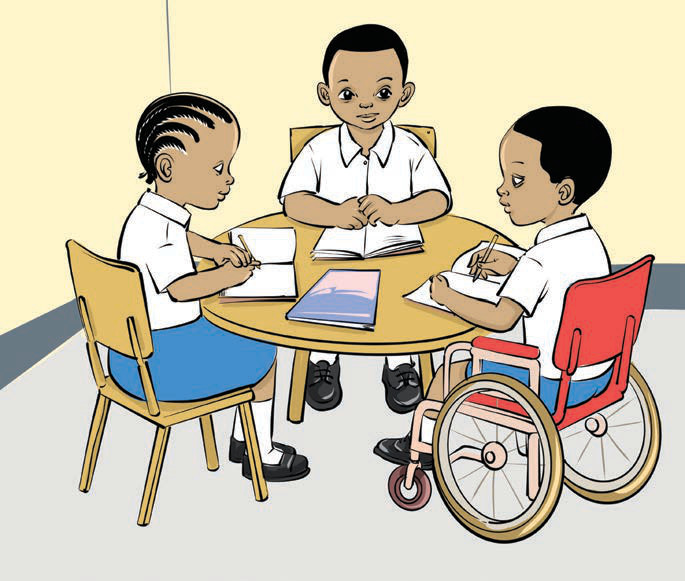

Retelling oral/signed texts
(a) Read the following conversation.

1
Hello, what should I do to retell information I heard/observed?
2
Oh, observe/listen carefully to it.
Then, put the events in the correct order, using words such as first, next, then, and last.
Use your own words as well.
3
You also need to ask yourself the following questions and answer them:
Who was in the text?
What was the text about?
What happened in the text?
Where did the story take place?
When did it take place?
What did the character do?
How did the story end?
4
Thanks, my friends! Now I can retell any information or story I hear/observe.
5
That’s great!